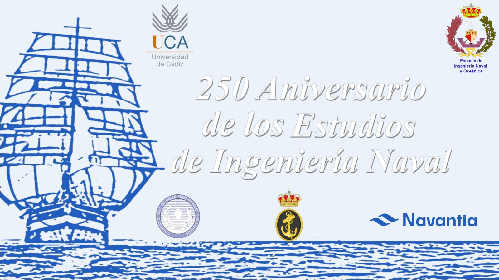

María Victoria Redondo Neble
Directora de la Escuela de Ingeniería Naval y Oceánica
Departamento de Matemáticas de la Universidad de Cádiz

Quiero comenzar agradeciendo a los profesores Dres. D. Francisco Ortegón Gallego y D. José Rafael Rodríguez Galván, el haberme brindado la oportunidad de escribir esta reseña sobre el 250.º aniversario de los estudios reglados superiores de ingeniería naval (1772), efeméride que conmemoramos el pasado 13 de mayo de 2022 en el Salón de Actos de la Facultad de Ciencias, en un acto organizado por la Escuela de Ingeniería Naval y Oceánica de la Universidad de Cádiz, con la colaboración del Colegio Oficial de Ingenieros Navales y Oceánicos de España, la Armada y Navantia.
También me gustaría expresar mi más sincero agradecimiento a las personas excepcionales que en este camino he tenido el privilegio de conocer, que nos han ayudado en la organización y de las que he aprendido por sus extensos conocimientos muchas de las cuestiones a las que aquí me voy a referir, el doctor ingeniero naval D. José María Sánchez Carrión, el doctor ingeniero naval D. Rodrigo Pérez Fernández y el capitán de navío D. Agustín E. González Morales, con cuya colaboración, apoyo, consejo y enseñanzas tuve el honor de contar desde el primer momento.
La Escuela de Navales de Cádiz, actualmente bajo la denominación de Escuela de Ingeniería Naval y Oceánica, es un magnífico centro en el que se imparten unas enseñanzas maravillosas que nacieron en el seno de la Armada y que están muy ligadas a la Bahía de Cádiz, un entorno privilegiado por la naturaleza y lleno de recursos, y a la historia que la precede.
No en balde sus estudios puede decirse que son el fruto de su enclave geográfico y de los distintos acontecimientos que tuvieron lugar desde los comienzos, partiendo de la tecnología naval y la destreza de los constructores y carpinteros de ribera de finales de siglo XV, que convirtió a España en la primera potencia naval del mundo, contribuyendo al descubrimiento de nuevos continentes y ampliando los límites del conocimiento, pero que tomó un rumbo hacia la necesidad de mejorar técnicamente la construcción naval en la primera mitad del siglo XVIII, bajo el reinado de Felipe V, para garantizar el tráfico marítimo y mantener esta hegemonía en ultramar.
Aunque 1772 es el año clave motivo de esta efeméride, no se pueden entender los estudios de ingeniería naval sin distintos acontecimientos cruciales que tuvieron lugar entonces.
Al llegar al trono español Felipe V a principios del siglo XVIII, las fuerzas navales mostraban una profunda decadencia y el rey, junto con su secretario de Estado, José Patiño Rosales, vieron la necesidad de reforzar la Armada para garantizar la seguridad de las costas y la conexión con ultramar, por lo que Patiño ordenó la creación del Cuerpo General, con funciones militares en la mar y competencias técnicas, y el Cuerpo de Ministerio, con carácter económico y de gestión. Asimismo, en el año 1717, el entonces Intendente General de la Marina Patiño crea, por un lado, la Academia de Guardias Marinas en Cádiz, promoviendo una enseñanza para formar a los oficiales tanto práctica como teórica, y en conocimientos que incluían la construcción, las matemáticas y el armamento, con el objetivo de conseguir que se convirtieran en técnicos, constructores, navegantes, y, por otro, ordena el comienzo de la construcción del primer astillero moderno de España, El Real Arsenal de la Carraca, en San Fernando, para reconstruir y aumentar la capacidad de la flota española, al que seguirían el de Cartagena y el de Ferrol.
Haciendo un inciso, y por citar algunas construcciones relevantes de la Bahía de Cádiz, el Real Arsenal de la Carraca botaría en 1752 el África, el primer navío de línea construido con un nuevo sistema de diseño y construcción llamado de Jorge Juan o a la inglesa, posteriormente las corbetas Descubierta y Atrevida que fueron utilizadas por Malaspina en su expedición científica, en 1846 construiría el Lepanto, primer vapor a ruedas construido en un arsenal del estado, el primer crucero metálico realizado en España, El Infanta Isabel, y en 1888 botaría el submarino Peral, el primero con propulsión eléctrica.
Este astillero, junto con los astilleros de Cádiz, que en 1895 botarían el crucero acorazado Emperador Carlos V, que fuera en su momento el barco más grande construido en España, y más tarde el Buque Escuela Juan Sebastián Elcano, velero emblemático y simbólico de nuestra tierra botado en 1927, y la nueva factoría de Matagorda en Puerto Real, que en 1891 botaba el vapor Joaquín del Piélago, su construcción número1, en la que empleó íntegramente materiales de producción nacional, construiría el trasatlántico Magallanes (figura 1), botado en 1927, y en 1958 ponía la quilla de El Talavera, el mayor petrolero construido hasta la fecha en un astillero español, configurarían a la Bahía de Cádiz como uno de los núcleos industriales más potentes de nuestro país a lo largo del siglo XX.
Volviendo a la historia, hay ciertos acontecimientos que se consideran relevantes a la hora de tomar decisiones y desembocar en los estudios actuales de ingeniería naval.
Además de la creación en 1717 de la Academia de Guardias Marinas, ubicada inicialmente en el Castillo de la Villa de Cádiz, donde permaneció hasta el año 1769 en que fue trasladada a la Isla de León (la actual San Fernando) en las ordenanzas de 1748, y siendo consciente la Armada de la necesidad de mejorar el nivel de conocimientos de sus oficiales, se recoge que aquellos alumnos que demostrasen su capacidad podrían aplicarse a las ciencias matemáticas más difíciles, siendo éste el germen de lo que serían conocidos como estudios mayores.
Por otro lado, gracias al impulso del Marqués de la Ensenada, máxima autoridad de la Armada, se produce entonces la primera revolución en la construcción naval española, bajo el reinado de Fernando VI. En 1751 es nombrado capitán de la Compañía de Guardias Marinas Jorge Juan Santacilia (figura 2), que después de ejercer una labor de espionaje industrial en Gran Bretaña, introdujo los últimos avances tecnológicos, incrementó las enseñanzas de la construcción naval y promovió la creación del Real Observatorio de la Armada de Cádiz, el observatorio más antiguo de España, al considerarlo indispensable para la formación y que coincidió en el Castillo de la Villa con la Academia de Guardias Marinas hasta que en 1798 fue trasladado a la Isla de León.
Sin embargo, el desarrollo del conocimiento científico unido a las nuevas misiones de la flota española, la protección y el mantenimiento del monopolio del comercio con América y Filipinas, la defensa de los territorios de ultramar, el incremento de los buques y la importancia táctica de la velocidad de estos, dejan de nuevo patente las carencias técnicas y la necesidad de poder contar con un cuerpo científicamente capacitado para dirigir las obras de construcción naval. Así, ya bajo el reinado de Carlos III y bajo el clima de alianzas de estado, se incrementó la colaboración con Francia en política naval y Francia cedió a unos de sus constructores, Francisco Gautier, iniciándose la segunda revolución de la construcción naval española.
Francisco Gautier, apasionado de la docencia y que ya explicaba Matemáticas, Geometría, Hidrodinámica y Dibujo en 1766 en un local habilitado en Guarnizo, impulsa la creación del Cuerpo de Ingenieros de Marina en 1770, naciendo por tanto en el seno de la Armada la figura del futuro Ingeniero Naval y Oceánico, en una ordenanza que contemplaba también la creación de una Escuela de Cadetes que no llegó a materializarse. Gautier, ya en la nueva ordenanza de 1772, suprimió la Escuela de Cadetes y en su lugar creó una Academia para instruir a los Ingenieros de Marina, lo que se considera el inicio de los estudios superiores de ingeniería naval. Sin embargo, la Academia no disponía de instalaciones propias como así ocurría con la Academia de Guardias Marinas o los estudios del Real Observatorio de Cádiz, y los ingresados en el Cuerpo recibieron clases en improvisados locales habilitados en los arsenales de Cádiz, Ferrol y Cartagena.
Por su parte, Francisco Gautier y, posteriormente, Romero Landa, que fuera alumno suyo, pusieron todo su empeño en la preparación de la Academia de Ingenieros de la Marina, sin embargo, ésta no llegó a institucionalizarse, probablemente por motivos económicos y por la lucha por las competencias entre el Cuerpo General, el Ministerio y ahora el nuevo Cuerpo de Ingenieros.
Con la rápida decadencia de la Marina años después, el Cuerpo de Ingenieros se quedaría sin escuela práctica, aunque conservaría la formación científica. Todo ello llevará a la supresión del Cuerpo por Real Decreto de 1827, siendo sustituido por el de Constructores, cuyo reglamento se enfocó a nivel puramente práctico, desechando el aspecto científico anterior. Las consecuencias serán funestas entonces para la construcción naval española y sus efectos se hicieron notar.
En 1834 se hacen los primeros intentos de reorganización del antiguo Cuerpo de Ingenieros de la Armada, que no llegarán a cuajar hasta 1848 por diversas dificultades, entre ellas la falta de hombres capacitados para constituir el núcleo del nuevo Cuerpo. En el Real Decreto de dicho año, se dispone la reorganización del Cuerpo de Ingenieros y el establecimiento de su Escuela Especial, que en 1849 ya existiría ocupando los pabellones del Colegio de Guardias Marinas en el Arsenal de La Carraca, y donde se mantuvo activa hasta el año 1860 en que se trasladó al Arsenal de Ferrol.
Sin embargo, esta Academia de Ingenieros de Cádiz parece que no llegó a consolidarse por la falta de profesores, debiendo completar su formación en el extranjero y egresando finalmente a unos pocos ingenieros. Algunos alumnos del Cuerpo acabaron formándose en el Real Observatorio en Cádiz.
Por su parte, el Cuerpo de Constructores se suprimirá, finalmente, por Real Decreto de 1851.
En paralelo, en 1773 se habían producido los primeros intentos de articular unos estudios de ampliación impulsados por las necesidades científicas de la Armada, que exigían que los oficiales del Cuerpo de Guardias Marinas cursaran estudios para sustentar el programa hidrográfico y que requerían una formación superior en Matemáticas, Física y Geometría para entender los avances de la Astronomía y la Navegación. Por ello, José de Mazarredo (figura 3), que había sido nombrado Comandante de las tres Compañías de Guardias Marinas en 1786, creó en 1787 el Curso de Matemáticas Sublimes, ordenando que en las tres Academias se enseñara la Geometría sublime, el Cálculo y su aplicación a la Astronomía, la Mecánica y la Construcción Naval.
El Observatorio se convertiría en el lugar por donde pasaran la mayor parte de los científicos de la marina ilustrada y donde acometieron proyectos tan importantes como el Atlas Marítimo de España o el primer almanaque náutico, aunque no fue hasta 1856 cuando quedó establecido en el Observatorio de San Fernando el Curso de Estudios superiores de Matemáticas puras, mecánica, física y astronomía, con alumnos destacados como Isaac Peral.
Después de ciertas vicisitudes y tras el desastre de 1898, siendo la construcción para fines comerciales cada vez más demandada, se producen a principios del siglo XX algunos intentos de implantar una especialidad de ingeniería naval con carácter civil, uno de ellos por parte de la liga marítima española de Cádiz, siendo estos infructuosos hasta el año 1917, cuando aparece la primera promoción de Ingenieros y Maquinistas de la Armada con un alumno civil, pero no es hasta 1933 cuando se decide crear la especialidad en Madrid, dependiendo ya del Ministerio de Instrucción Pública (en la figura 6 se muestra la implantación de los estudios superiores de Ingeniería Naval). Coincidiendo con el año de la creación del Cuerpo de Ingenieros Navales Civiles al Servicio del Estado en 1962, comienza la andadura de nuestra Escuela de Peritos Navales en el mes de octubre de ese año.
La enseñanza Técnica de Grado Medio en su especialidad de Perito Naval se implantó en Cádiz por orden ministerial en enero de 1962, siendo por tanto la primera en España en impartir dicha titulación, y ya en 1964 se implantó la titulación de Ingeniero Técnico Naval. Inicialmente dependía de la Universidad de Sevilla, pasando a la Universidad de Cádiz cuando ésta fue creada en el año 1979, siendo uno de sus pilares y un magnífico precedente en su nacimiento.
Se impartió desde sus comienzos en las instalaciones de la entonces Escuela Técnica de Peritos Industriales en Cádiz y en el Curso Académico 1992/93, la ya Escuela Universitaria de Ingeniería Técnica Naval pasó a ubicarse en el término municipal de Puerto Real, en el Centro Andaluz Superior de Estudios Marinos (CASEM), único centro integrado de España que alberga enseñanzas que tienen como eje común el mar y la industria marítima y marina, y donde tienen también su sede la Escuela de Ingenierías Marina, Náutica y Radioelectrónica y la Facultad de Ciencias del Mar y Ambientales.
En el curso 2010/11 se implanta el actual grado en Arquitectura Naval e Ingeniería Marítima y la Escuela pasa a denominarse Escuela de Ingeniería Naval y Oceánica, implantándose en 2016/17 el máster en Ingeniería Naval y Oceánica.
Por tanto, mientras los Astilleros de la Bahía de Cádiz cumplen años con gran vitalidad en la actualidad, con la construcción de las corbetas, los nuevos buques de acción marítima, el tradicional mercado de petroleros y la reparación de Grandes Cruceros, nuestra escuela está a punto de cumplir 60 años de historia en este marco excepcional, con importantes empresas que colaboran con nuestro centro en su formación y con un alto porcentaje de profesionales procedentes del sector naval que compaginan su actividad con la docencia en nuestro centro. La celebración de tan importante efeméride constituyó el pasado 13 de mayo un día muy especial, porque pudimos conmemorar de donde venimos, nos unen lazos históricos con la Armada, y analizar hacia donde vamos con la colaboración de la Industria y sus profesionales.
El evento fue presidido por D. Francisco Piniella Corbacho, rector de la Universidad de Cádiz, y estuvimos acompañados en la mesa presidencial por D.ª Elena Amaya León, alcaldesa de Puerto Real, D. Manuel Antonio Martínez Ruiz, vicealmirante del Cuerpo de Ingenieros de la Armada y director de Ingeniería y Construcciones Navales, D. Cristóbal Sánchez Morales, secretario general de Industria y Minas de la Junta de Andalucía, D.ª Pilar Tejo Mora-Granados, decana del Colegio Oficial de Ingenieros Navales y Oceánicos de España, y D. José Antonio Rodríguez Poch, director de Negocio de Corbetas y Buques de Acción Marítima de Navantia.
El programa del acto se estructuró en dos sesiones de ponencias, la primera estuvo dedicada a la Historia de los Estudios de Ingeniería Naval y la segunda a la Ingeniería Naval en la actualidad. Abrió la primera sesión el capitán de navío del Cuerpo de Ingenieros de la Armada, ingeniero en la especialidad de Armas Navales y escritor, D. Agustín E. González Morales, que impartió la conferencia titulada «Finales del siglo XVIII: comienza la enseñanza de la Ingeniería Naval en España con Gautier y Romero Landa». El doctor ingeniero naval, profesor en la ETSIN (UPM) y Global PFD Director (Marine) en Siemens Digital Industries Software, D. Rodrigo Pérez Fernández, trató de «Las vicisitudes de la Ingeniería Naval y sus centros de formación en el periodo 1808-1948». Y cerrando la primera sesión, el doctor ingeniero naval y catedrático de Construcciones Navales de la UCA, D. Rafael González Linares, impartió la ponencia titulada «Un Quinquenio Prodigioso en la Industria Naval de la Bahía de Cádiz».
La segunda sesión de ponencias contó con las conferencias «Un proyecto retador para los Astilleros de la Bahía de Cádiz», impartida por el ingeniero naval y director del Programa de Corbetas AVT2200 para Arabia Saudí en Navantia, D. Vicente Martínez Caridad, «Navantia SEANERGIES. Origen y Capacidades», a cargo del ingeniero naval y responsable del área de Contract Management dentro de la División de Navantia Seanergies, D. Pablo López Díez, e «Ingeniería Naval, retos y desafíos en el siglo XXI», en manos del ingeniero naval promotor-director de Sea Master Consulting Engineering y decano territorial del Colegio Oficial de Ingenieros Navales y Oceánicos en Andalucía, D. Luis Labella Arnanz.
Finalmente, la clausura también contó con la intervención de D. Antonio Crucelaegui Corvinos, director de la Escuela Técnica Superior de Ingenieros Navales de la Universidad Politécnica de Madrid, y D. Juan José Hernández Ortega, director de la Escuela Técnica Superior de Ingeniería Naval y Oceánica de la Universidad de Cartagena.
Además, estuvieron presentes numerosas autoridades civiles y militares procedentes de la Universidad, de la Armada y de la Industria Naval, y de profesorado, estudiantes actuales y egresados de nuestro centro y de nuestra universidad.
Y ahora debemos continuar el camino, con una formación actualizada que satisfaga la demanda actual y futura del sector, sin olvidar la investigación y el desarrollo científico, fundamentales para poder avanzar.
En 2015 la Organización de las Naciones Unidas marcó una meta, con la agenda 2030 y los Objetivos de Desarrollo Sostenible, que debe dirigir nuestro camino, y como parte de la Universidad, que tiene como compromiso el servicio público de la enseñanza superior y la formación integral de sus estudiantes, debemos tener como uno de nuestros pilares fundamentales el compromiso con nuestro entorno y la proyección del conocimiento para el bien común, contribuyendo al desarrollo económico, social y ambiental de nuestro territorio y siendo parte activa en este plan de paz y prosperidad para las personas y el planeta.
Desde la ingeniería, estamos en una nueva revolución industrial, la Industria 5.0, la revolución industrial de las personas, que pretende tratar a la tecnología desde un punto de vista más responsable y comprometido, generando un impacto positivo en la sociedad. Sus ejes son la sostenibilidad, las personas y la capacidad de adaptarnos y tomar medidas de recuperación basadas en prioridades ecológicas, digitales y sociales.
El sector naval, estratégico para la generación de empleo por su contribución directa a la economía, al ser un pilar fundamental para el desarrollo de otras actividades, desempeña un papel crucial en la reducción de contaminantes, del impacto ambiental, el consumo responsable, el uso de materiales sostenibles y la optimización de la hidrodinámica entre otras cuestiones, factores todos ellos que contribuyen a la consecución de los objetivos.
La Ingeniería Naval y las Matemáticas tienen mucho que decir en la búsqueda de este mundo mejor.
Agradezco enormemente al Dr. D. Rodrigo Pérez Fernández su ayuda en esta publicación, habiendo revisado la misma. También les agradezco a mis compañeros del equipo de dirección, los profesores doctores D. Andrés Yáñez Escolano y D. Francisco Damián Ortega Molina, por la elaboración de los fondos y algunos carteles que sirvieron como imagen del evento y en la exposición que le acompañó, algunos aquí incluidos, y a Dña. Marina Ramajo Segovia, directora del Museo El Dique de Navantia, el haberme proporcionado información relevante, parte de la cual aparece en esta reseña.
[1] Sánchez Carrión, J.M. (2009), La división de la Compañía de Guardias Marinas de Cádiz y la creación de las Subalternas (Cartagena y Ferrol) en 1776. Revista de Historia Naval, 104, 49-75.
[2] Sánchez Carrión, J.M. (2009), Los ingenieros de marina: motores de la renovación y tecnificación de la construcción naval española (1770-1827). Su organización, academia y realizaciones. Tesis Doctoral. ETSIN (UPM).
[3] Pérez Fernández, R. (2020), Las personas que desarrollaron la ingeniería naval en España. Desde Gaztañeta hasta Rechea Hernández. 59º Congreso de Ingeniería Naval e Industria Marítima. Organizado por la Asociación de Ingenieros Navales de España. 14 y 15 de diciembre 2020. ISBN 978-84-939303-8-7.
[4] Pérez Fernández, R. y Pérez-Martinez, J. (2021), El desarrollo de la ingeniería naval en España: 250 años de historia. Revista de Historia Naval. Año XXXIX. Número 154. pp. 107-118. ISSN 0212-467X (impresa) e ISSN 2530-0873 (online).
[5] González Morales, A.E. y González García, A.J. (2021), Cuerpo de ingenieros de la Armada: herederos de la tradición, impulsores del progreso. Ministerio de Defensa. Secretaría General Técnica. ISBN 978-84-9091-602-5.